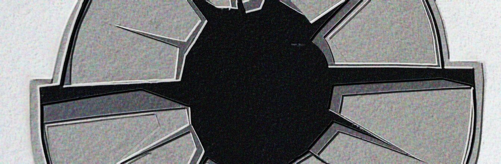

Visual Communication — The Infraordinary
Unit 1, Week 3A

Research
“M/M are kinda like font-psychics, they tune into each project and become that, they are the method actors of letters…”
Process
Before the project began, I read Georges Perec on the infra-ordinary and brainstormed around ritual and routine.
A response to the prompt: “Visually communicate the idea of HURRY without using letters, numbers or recognisable symbols.” (60 seconds)
“Visually communicate the idea of SILENCE without using letters, numbers or recognisable symbols.” (60 seconds)
“Write a simple word, such as STOP. Rewrite the word several times, each time changing only one thing.” (120 seconds) The word I chose was the Serbo-Croatian katastrofa (catastrophe).
“Write the word MOVEMENT. Represent the meaning of the word without changing the letters themselves.” (120 seconds)
“Go for a walk… While on your walk, write a haiku poem, and collect found objects and things, and images of letterforms you notice in the environment.” (20 minutes)
Haiku brainstorming
- 076
- 077
- 085
- 086
Photos from my walk
- 206
- 207
- 208
- 209
- 210
- 211
- 212
- 213
- 214
- 215
- 216
- 217
- 218
- 219
- 220
- 221
“Read through your poem/s and select words that stand out to you for their visual possibilities. Create 10 different small compositions exploring ways of writing that word so its appearance conveys its meaning. Use only letters but explore different media and processes.”
At first I was interested in the daily routines and rituals that we take part in collectively. I quickly zeroed in on public transit, and on my walk zeroed in further on the wonderful, and dare I say iconic, graphic design of London Transport. That’s what I took photos of and wrote my haiku about. But then came a sudden turn I can’t quite remember: I couldn’t stop thinking about the word katastrofa and Hemon’s essay of the same name. It was too personal, and the word really does look strangely beautiful on the page.
“I’m of a staunch belief that anything that can be said and thought in one language can be thought and said in another. … But then there is the Bosnian word katastrofa, which, most obviously, comes from the same Greek word (katastrophe [καταστροφή], meaning overturning) as its English counterpart catastrophe. But in Bosnian—or at least in the language my family uses—katastrofa has a substantially different value and applicability than catastrophe has in English.”
“We use it all the time, deploying it in the contexts that would be less appropriate in English. My mother would thus reprimand my father by saying, ‘Ti si, ćale, katastrofa!’ (translatable as: You, Pop, are a catastrophe!) because he left a trail of dirty socks all the way to the bedroom. Or my father, in his report on a pipe bursting in their house wall, would use katastrofa to refer to the necessity of digging through said wall to find the source of the leak. My sister, who lives in London, would describe the leaden January skies depressingly looming over England and her head as katastrofa. And I could apply katastrofa to, say, the inability of Liverpool FC to defend corner kicks, or to the realization that I’m in the bathroom without toilet paper and the nearest roll is a hallway away.”
Perec opens his essay by complaining that we only notice the extraordinary (a train only exists for us once it derails). What he asks us to look at instead is everything else: “the banal, the quotidian, the obvious, the common, the ordinary, the infraordinary, the background noise, the habitual.” Can the ordinary be made extraordinary simply by paying attention to it?
Hemon’s essay explores the same theme, but from the opposite direction. In his family’s Bosnian, katastrofa is an everyday word: a trail of dirty socks to the bedroom, a burst pipe, a leaden January sky, no toilet paper within reach. It is everywhere, he writes, “shimmering like shrapnel on a sunny day”. But then there is catastrophe in its more terrible sense: war, violence, destruction. Even these extraordinary events, experienced day after day, can become part of the ordinary fabric of life. Perhaps this is why katastrofa has woven itself so thoroughly into everyday Bosnian speech, while its English equivalent still suggests something exceptional. When Hemon asks his parents what the opposite of katastrofa is, they answer together: normal life. His mother remembers the war first as the dissolution of her routines.
The two essays are almost mathematical inverses of one another. Perec asks us to discover the extraordinary within the ordinary; Hemon shows us the extraordinary becoming ordinary. The infra-ordinary is not simply the opposite of catastrophe. It is what catastrophe ruptures, what we fail to notice until it disappears. And catastrophe itself, given enough time, can become infra-ordinary.
“On the contrary, the ease with which the word katastrofa is applied is related to its very ubiquity. Rather than existing exclusively in magnanimous, tragic dimensions, katastrofa is everywhere, its particles always shimmering like shrapnel on a sunny day.”
“Create an alphabet/letterforms that encapsulate the meaning of the poem. The appearance of the letters should be integral to the message your poem is expressing.”
All of my letterforms were inspired by different Spomeniks (“monument” in Serbo-Croatian): the memorials built across socialist Yugoslavia, mostly in the 1960s to the 1980s, to commemorate the Second World War, the partisan resistance against the Axis occupation, and the victims of its massacres. They stand on former battlefields, often in remote landscapes.
Rather than soldiers or flags, their sculptors and architects — among them Bogdan Bogdanović, Dušan Džamonja, Vojin Bakić and Miodrag Živković — made concrete and stone into wings, fists, flowers and shards. Avoiding any national or religious symbol was deliberate: in a country of many peoples, the monuments were meant to speak for all of them, in the spirit of Tito’s “brotherhood and unity”. After Yugoslavia broke apart in the 1990s, many were neglected or vandalised, and in the last twenty years they have found a new audience which often presents them as futuristic sculptures and strips them of their history.
-
222
The Flower Monument (Stone Flower), Jasenovac, Croatia. Bogdan Bogdanović, 1966.
-
223
Monument to the Revolution of the People of Moslavina, Podgarić, Croatia. Dušan Džamonja and Vladimir Veličković, 1967.
-
225
Monument to the Uprising of the People of Kordun and Banija, Petrova Gora, Croatia. Vojin Bakić, 1981.
-
226
The Broken Ring, Pleso Spomen Park, Zagreb, Croatia. Marijan Burger, 1978.
-
228
Monument to the Fallen Soldiers of the Kosmaj Detachment, Kosmaj, Serbia. Vojin Stojić, 1971.
-
229
Mausoleum of Struggle and Victory, Čačak, Serbia. Bogdan Bogdanović, 1980.
-
230
Kadinjača Memorial Complex, Užice, Serbia. Miodrag Živković, 1979.
-
231
Mausoleum to the Fallen Insurgents, Popina, Serbia. Bogdan Bogdanović, 1981.
-
232
The Three Fists, Bubanj Spomen-Park, Niš, Serbia. Ivan Sabolić, 1961.
An AMAZING short film that centres on the Spomeniks: A Second World by Ruben Woodin Dechamps (2016).